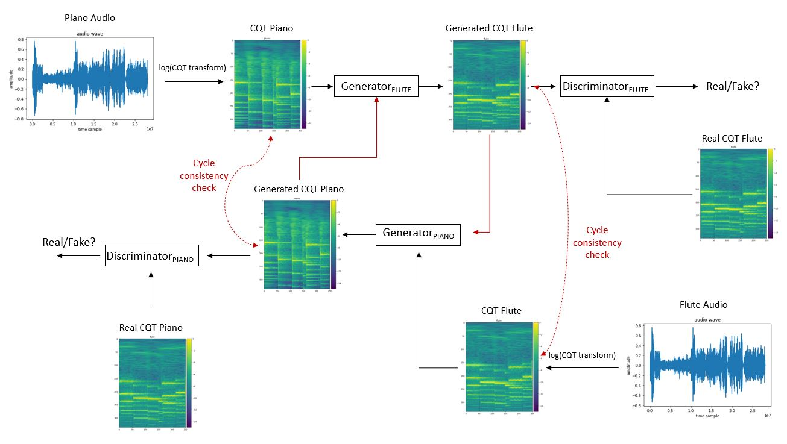

Our vanilla CycleGAN model is inspired by Unpaired Image-to-Image Translation using Cycle-Consistent Adversarial Networks. TimbreTron model is from by TimbreTron: A WaveNet(CycleGAN(CQT(Audio))) Pipeline for Musical Timbre Transfer Special thanks to Aladdin Persson for his detailed discussions on Generative Adversarial Networks. 